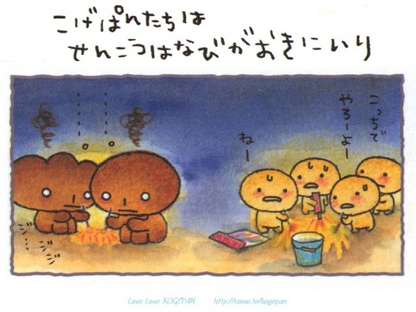

烤焦麵包是由一位名為Takahashi Miki 的日本人在1999 年6月5號所設計發行出來的卡通圖案名為【Kogepan】，這各圖案設計了不少的商品，但文具就佔了大多數，根據一些小道消息指出明年還會推出一些有關【Kogepan】的動畫呢！
烤焦麵包的由來是一塊用優質北海道豆沙製造而成的豆沙包，每日只限定售20個。他原本是一個很名貴的麵包，上面就是他未被烘的樣子了，可惜好景不常，本來十分名貴的麵包被燒焦了，當然不能賣出，麵包仔受到很大的打擊，覺得作為'麵包'的人生已經完結，頓時雙眼反白，木無表情，開始他可憐的人生。
他認為與其遭受大家的遺棄，就不如離家出走吧！離開麵包店後，麵包仔仍然遭到其他麵包對他投以奇異目光，另他覺得自己不受別人的喜愛，感受到世界的人情冷暖，明白到什麼是人生...自暴自棄的他學懂吸煙飲酒，終日無所是事，有時遇見漂亮麵包，他會向他們說教一番，發一發牢騷。那些單純的漂亮麵包很容易被他嚇怕呢！不過，他也有發奮的時候，中間他會看看那本"怎樣成為漂亮麵包"的書。他還有一句口頭禪就是：" 反正都是要被拋棄的！
這是每日限定發售二十個的特製麵包，看來十分美味呢，可是他是全部我覺得比較不可愛的一個。
這是漂亮的奶油麵包。
這就是他被燒焦後的模樣，他那寂寞的表情很惹人憐愛就連我也深深著了迷呢！
他的遭遇比主角更可憐，因為他被燒的更焦；還真有點同情他呢！可憐可憐！
他的樣子和奶油麵包有點相似呢，看他的頭這麼大，走路起來一定是晃頭晃腦吧！
嗯...可能找不到他適合他戴的帽子呦
好可愛，其他烤焦麵包的樣子都是很可憐，但這個麵包的樣子好像很開心似的，
而且還發光呀，好像是烤焦麵包世界裡的小Baby。